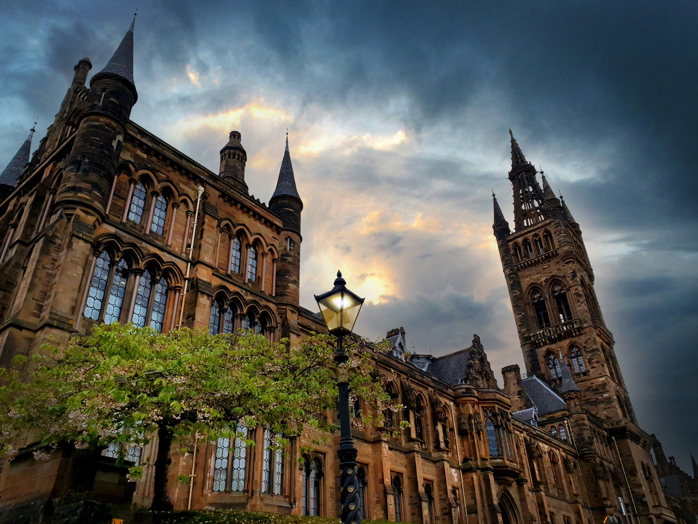

About the programme
Based at the University of Glasgow and funded by the Leverhulme Trust, the Leverhulme Programme for Doctoral Training in Ecological Data Science will train a new generation of scientists. The programme will equip students with the skills to tackle the most pressing environmental challenges of our time, including biodiversity loss, ecosystem degradation, and emerging infectious diseases. Students will be trained in the latest data science techniques, including machine learning, statistical modelling, and spatial analysis, and will apply these skills to a range of ecological and environmental problems.

The programme will provide students with a unique opportunity to work with world-leading researchers in ecology, data science, and conservation, and to undertake research in a range of exciting areas, including:
- Deploying deep learning to analyze marine acoustic and image data
- Using natural language processing to understand the drivers of biodiversity loss
- Combining machine learning with metagenomics to understand emerging infectious diseases
- Developing new statistical methods for modelling species distributions
- Creating edge machine learning algorithms to monitor animal movement and behaviour
Programme structure
The focus of the programme is on interdicplinary training and research. Students will undertake a 4-year PhD that is comprised of two stages.
Stage 1: Training and rotation projects
In year 1, students will undertake a series of training courses in data science and ecology, as well as undertaking three group rotation projects, each lasting 3 months. These projects will be undertaken with supervisors from different disciplines and will provide students with the opportunity to develop their scientific skills and refine their research goals.
Each cohort will select their rotation projects from a list of nine available projects. Following the rotation projects, students will select their final PhD project based on one of the rotation projects they have undertaken. Once selected, students will work with their supervisors to tailor the project to their research interests and identify their training needs.
Stage 2: PhD research
In years 2-4, students will undertake their PhD research, with the support of an interdisciplinary team of supervisors and the programme team. During this time, students will also undertake a range of training activities, including courses in data science and ecology, as well as professional skills development.
Cohort building
Throughout the programme, students will be embedded into a collaborative and supportive environment that will foster interdisciplinary research and training. Cohort building activities will include:
Induction events
At the start of the first three years of the programme, all new and existing students will participate in a 2-day residential induction and team-building session. The event will be held at the Scottish Centre for Ecology and the Natural Environment (SCENE) on the shores of Loch Lomond and involve a combination of presentations on essential skills for obtaining a PhD, research talks from supervisors and students, team building activities, and social events. The event will give incoming students the opportunity to interact with other cohorts and supervisors on the programme in an informal setting as well as obtaining key information on their forthcoming studies.
Annual away day
There will be an annual research away day to be held at SCENE in August of each year. The away day will be an opportunity for both students and supervisors to present their research, discuss ideas, celebrate successes, and reflect on the previous year. Students on the programme from years 2 and above will form the organising committee for the away day and be in charge of coordinating talks and selecting and inviting academics to present.
Entry requirements
Successful applicants will be expected to have a minimum of a 2.1 undergraduate degree in a relevant subject (e.g. ecology, biology, mathematics, statistics, physics, computer science, engineering, etc.).
Applicants with a background in ecology will be expected to have evidence of quantitative skills in statistics, mathematics, or programming. Applicants from a quantitative background will be expected to show an interest in ecology and environmental science.
A masters level qualification is preferred but is not an essential requirement.